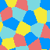

Pattern Texture Generator
The Pattern Texture Generator is one of the texture generation editor tools that allows you to create a wide variety of procedural pattern textures directly inside Unity.
Open it via:
Gamelogic → Tools → Texture Generation → Pattern Texture Generator
Overview
The tool supports the following pattern types:
- Checkerboard
- White Noise
- Multi-Channel White Noise
- Color List Noise
- HSL Color Map
- Sine Grid
Each pattern offers its own set of controls, detailed below.
How It Works
- Select the Pattern Type.
- Adjust the Pattern Settings.
- Review the Preview (updates automatically).
- Click Save Texture to export as PNG.
Texture generation tools explain the workflow and global settings.
Pattern Types
Below are all available pattern types and their configurable properties.
CheckerBoard
Generates a two-color tiling pattern.
| Control | Range | Description |
|---|---|---|
| Color 1 | 🎨 | Color of the first tile. |
| Color 2 | 🎨 | Color of the second tile. |
| Cell Dimensions | Integers ≥ 1 | Pixel width and height of each checker cell. |

White Noise
Generates pure grayscale or color noise by interpolating between two colors.
| Control | Range | Description |
|---|---|---|
| Color 1 | 🎨 | Lower bound for noise interpolation. |
| Color 2 | 🎨 | Upper bound for noise interpolation. |

Multi-Channel White Noise
Generates independent white noise for Red, Green, and Blue, with channel isolation options.
| Control | Range | Description |
|---|---|---|
| Value Range (Min) | [–1, 1] | Minimum sampling range for noise values. |
| Value Range (Max) | [–1, 1] | Maximum sampling range for noise values. |
| Channel View | {All, Red, Green, Blue} | Choose which channel(s) to visualize. |

Color List Noise
Creates noise where each pixel is randomly assigned either a background color or a color chosen from a customizable list.
| Control | Range | Description |
|---|---|---|
| Background Color | 🎨 | Base color for most pixels. |
| Foreground Colors | 🎨* | Editable list of possible foreground colors. |
| Foreground Probability | [0, 1] | Probability that a pixel uses a foreground color instead of the background. |

Hue-Lightness Sheet
Generates an hue-lightness color sheet:
- Horizontal axis: Hue
- Vertical axis: Lightness (Black → Hue → White)
| Control | Range | Description |
|---|---|---|
| (No additional controls) | – | Texture is fully determined by UV mapping. |
!(../images/texture_generation/hsl_color.png)
Sine Grid
Creates smooth grid pattern using sin(2πfx) * sin(2πfy).
| Control | Range | Description |
|---|---|---|
| Frequency | [0, ∞] | Number of oscillations across the texture. |
| Color 1 | 🎨 | Color for low values (0). |
| Color 2 | 🎨 | Color for high values (1). |

Here are the missing documentation sections for the patterns your tool supports but your documentation page does not yet include:
Multi-Sine Grid
Adds three smooth grid patterns made from sin(2πfx) * sin(2πfy) each at a different frequency.
| Control | Range | Description |
|---|---|---|
| Frequency 1 | [0, ∞] | Frequency of the first sine pair. |
| Amplitude 1 | any | Contribution strength of the first sine pair. |
| Offset 1 | any | Phase offset applied to the first sine pair. |
| Frequency 2 | [0, ∞] | Frequency of the second sine pair. |
| Amplitude 2 | any | Contribution strength of the second sine pair. |
| Offset 2 | any | Phase offset applied to the second sine pair. |
| Frequency 3 | [0, ∞] | Frequency of the third sine pair. |
| Amplitude 3 | any | Contribution strength of the third sine pair. |
| Offset 3 | any | Phase offset applied to the third sine pair. |

Value Noise
Generates a smooth noise texture by sampling a coarse grid of white noise and bilinearly interpolating between them. Gamma can be applied to bias the distribution toward light or dark values.
| Control | Range | Description |
|---|---|---|
| Frequency Power | [0, 12] | Determines grid resolution: cell size = textureSize / 2^N. |
| Log Gamma | [–1, 1] | Applies a gamma bias: value = pow(noise, 10^{–logGamma}). |
| Color 1 | 🎨 | Low end of the color mapping. |
| Color 2 | 🎨 | High end of the color mapping. |

Multi-Channel Value Noise
Like Value Noise, but each of the RGB channels is generated independently, producing colored smooth noise.
| Control | Range | Description |
|---|---|---|
| Frequency Power | [0, 12] | Determines grid resolution per channel. |
| Log Gamma | [–1, 1] | Gamma bias applied independently to each channel. |
| Color 1 / Color 2 | 🎨 | (Not used for this mode — output comes from RGB noise.) |

Voronoi
Generates a Voronoi diagram using Poisson-disk sampling for site placement and Delaunay triangulation for cell construction. Each Voronoi region is filled with a color chosen from a user-defined palette, ensuring adjacent regions receive different colors.
This pattern is useful for generating cellular textures, organic tiling, stylized maps, or region-based masks.
| Control | Range | Description |
|---|---|---|
| Poisson Radius | (0, ∞) | Minimum distance between Voronoi sites. Larger values produce fewer, larger cells; smaller values produce denser, finer regions. |
| Foreground Colors | 🎨* | Palette of colors used to fill Voronoi regions. Adjacent regions are colored differently when possible. |
How it works:
- Sites are generated using Poisson-disk sampling for even spatial distribution.
- A Delaunay triangulation is constructed from the sites.
- Voronoi cells are built from triangle circumcenters.
- Regions are graph-colored using the DSATUR algorithm to minimize color clashes.
- Each region is rasterized into the output texture.
